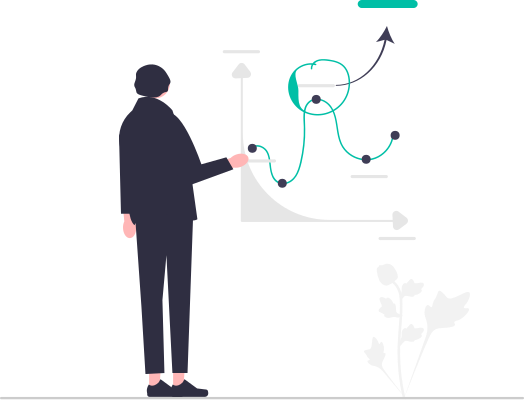
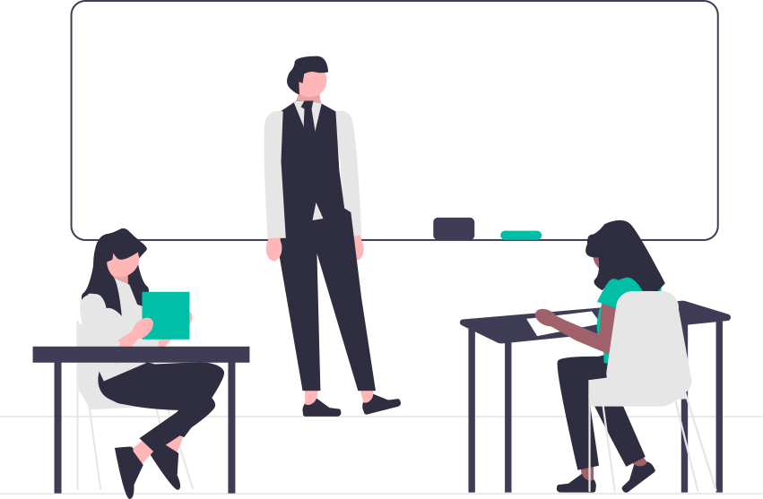

1 イントロダクション
2023年度 管理会計
1.1 管理会計とは
- 管理と会計
- 会計といったら簿記？損益計算書？
管理会計は一言で言うと，
企業の構想実現のために会社で使われる仕組み
1.1.1 期待される役割
管理会計の仕組みは，大きく分けて二つの役割を果たすことが期待されています。
① より良い意思決定を支援する
企業は日々様々な決定・判断をしている
- お客さんの注文を受けるべきか
- 製品の部品を自社で製造するか，他社製品を買ってくるか
- 新規事業に進出するか否か
- どの部署にどのぐらいの人員やお金をかけるべきか
こういった経営上の判断に役立つ情報を提供する

② 企業の構想実現に向けて従業員を動機付ける
(就職活動の時に言ったこととは違って)従業員は会社のために身を粉にして働きたいと思っているわけではない
- 辛い仕事はしたくないし，残業も嫌だ
- でもなるべく高い給料は欲しいし，福利厚生は手厚く欲しい
- 自部門の評価が上がるなら他部門はどうでもいい
管理会計の仕組みを使って，「企業のために頑張ってくれたら報われる」状況を作り出し，努力を引き出す


1.1.2 学ぶこと
1. 管理会計に使われる仕組み
長期経営計画・利益計画・予算・原価計算など，管理会計で扱われる会社の仕組みについて学びます。これらがどんな手続きでどのように作成され，運用されるかを勉強します。
2. 仕組みの下での人間の行動
企業において従業員は，管理会計の仕組みの下で「管理され」ながら働くわけですが，正確な情報を提供する仕組みを整備すれば従業員は企業のた戦略実現のために働いてくれる，というわけではありません。
- 人はルールの中で（時にはルールの穴をついて）うまく立ち回ろうとします。そのような行動は時に企業にとって好ましくないものになり得ます。
- （役割①）意思決定を支援する，という目的を意図して整備した仕組みが意図せず（役割②）従業員の，企業にとって望ましくない行動を誘発してしまうこともあります。
仕組み自体を知ることは重要です。企業が求める情報をどのように集計し，計算するかの技術的な側面を知ることがこの授業の第1の目的です。しかし，その仕組みの下で，従業員がどんな行動をとるのか，どうすれば望ましい行動をとってくれるよう動機付けられるのか，といった人間の行動の側面について考えることがより重要です。その意味では，経営学・経営管理論に近い部分もあります。
1.1.3 管理会計が関わる状況
管理会計はどんな組織のどんな部署で働くことになっても「切実に」関わります
- 企業の各部門は，予算をもとに売上目標や原価目標，利益目標等を課されます。
- 例えば営業部門は売上高目標を達成することを目指して日々業務します。
- 製造部門は原価（低減）目標達成のために，より効率的な製造を目指します。
- マーケティング部門や研究開発部門は，あらかじめ設定された予算の中でマーケティング施策や新技術開発を行います。
- 新設備の導入を検討する際には，導入コストと期待される効果を貨幣価値で測定します。
- 各従業員の評価は業績目標の達成度合いを加味して決定され，ボーナスや昇進は短期・長期の評価によって決まります。
企業の最終的な成果が利益という金銭価値で測定される以上，組織内の業績や評価もその多くが金銭的価値として測定されます。
1.2 自己紹介
佐久間智広
経営学研究科・准教授
学歴
- 2007-2011: 神戸大学経営学部
- 2011-2016: 神戸大学大学院経営学研究科
- 博士（経営学）, 2016
経歴
- 2015-2022: 松山大学経営学部,
- 講師→准教授
- 2019-2019: WU Vienna IfU
- Research visitor
- 2019-2020: Georgetown University MSB
- Visiting scholar
- 2022- : 神戸大学経営学研究科, 准教授
専門
- 管理会計，特に評価と報酬の仕組み
- 人を評価し，動機付ける仕組み
業績目標の期中改訂が被評価者の行動に与える影響
主観的業績評価における評価者のバイアス
創造性の発揮と業績評価システムの関係
その他，原価管理やなんかもやってます。
1.3 授業の進め方
- 授業は教科書に沿った講義とケース題材を使って進めます。
- ケースは授業中もしくは事前（不定期）
- 授業中の問題演習や，ミニレポートを課す予定です（不定期）
- 教科書の該当部分は事前にざっと目を通してきてください。
- 基本的には講義形式です。
- たまに意見を書いてもらったり問題をやってもらったりすることもあります。
- 授業後は授業内容を踏まえて教科書をちゃんと読んでください。


1.4 評価の方法
- 到達度確認（期末試験）70%
- レポート 20%
- 授業中のミニレポート 10%
神戸大学では，期末一発勝負に近いほど好まれると理解しています（前任校では超嫌われました）。しかし，大学での勉強では自分で調べながら時間をかけて考える時間も必要なんじゃないかなーと思うので，レポートも課しています。あまりに授業に来てくれなかったら寂しいので，授業中のミニレポートにもちょっとだけ評価点をつけています。
1.5 その他
1.5.1 オフィスアワー
- メールでアポを取ってください。
- 次の時間はゼミなので，授業後は時間取れません。

1.5.2 注意事項
授業中は学校のルールと社会規範に反しないように振る舞ってください。
- マスクや飲食等は大学の最新のルールをご確認ください。

1.5.3 メッセージ
- シラバスにもあるように，管理会計は，どのような職種のどのような部署で働くことになっても，否応なく関わるものです。
- 部門予算の折衝
- 予算内でのやりくり
- 業績に応じた部署評価，個人評価
- 管理会計はいわば職場のゲームルールです。ルールを熟知した上で賢く立ち回ってください
- また，管理会計はどのような部署とでも関わるので，（管理会計を専門としていない方は），ぜひご自身の専門の知識とかかわらせながら聞いてください
- 顧客満足度は，企業の利益につながるのか？どうやって確かめる？
- モチベーションを高めるための業績評価の仕組みは？
- 会計業績による客観的な評価によってボーナスを与えるとモチベーションが高まる？
- 成果主義は内発的動機を損なう？
- 採用方法や組織文化と管理会計の仕組みとの関係は？
- 財務会計と管理会計の関係は？
- 管理会計の仕組みはイノベーションを阻害する？